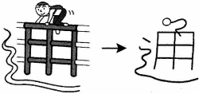

THÔNG - Thông suốt, thông qua
- kanji :
- 通
- Âm Hán Việt:
- THÔNG
- On
- つう、つ
- Kun:
- とお、～どお、かよ
- Bộ
- マ :マ(ま) katakana
用 :DỤNG - dùng
辶 :SƯỚC - bộ sước
|  | Tôi thông qua hàng rào để đi học. l pass over the fence to commute. さくを乗のり越こえて、通つう学がくします。 |
|
| On: つう | Kun: とお、～どお、かよ | |
|
|
|
|
||
Từ thường dùng
- 交通 （こうつう） - GIAO THÔNG - Traffic.
- 通る （とおる） - THÔNG - Băng qua, vượt qua - To go through, to pass.
- 通う （かよう） - Đi đi về về - to commute.
- 通訳 （つうやく） - THÔNG DỊCH - Interpretation.